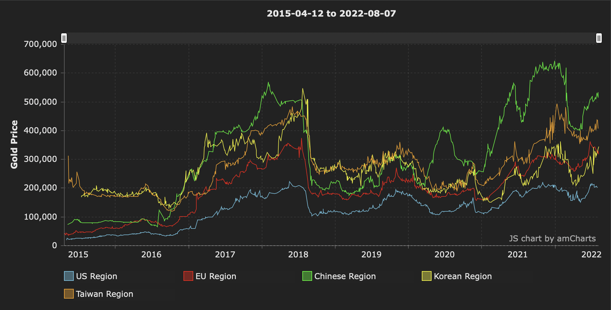
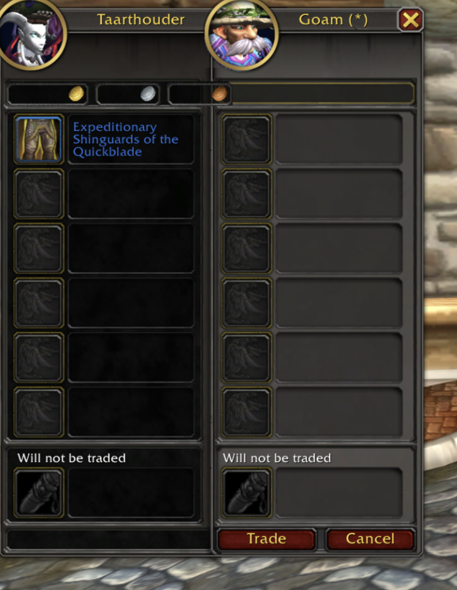
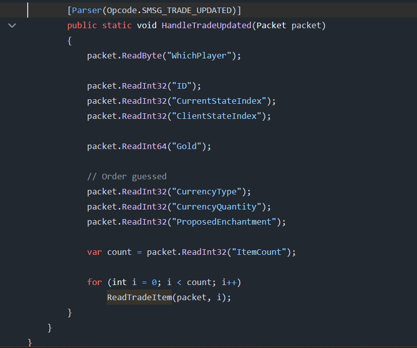
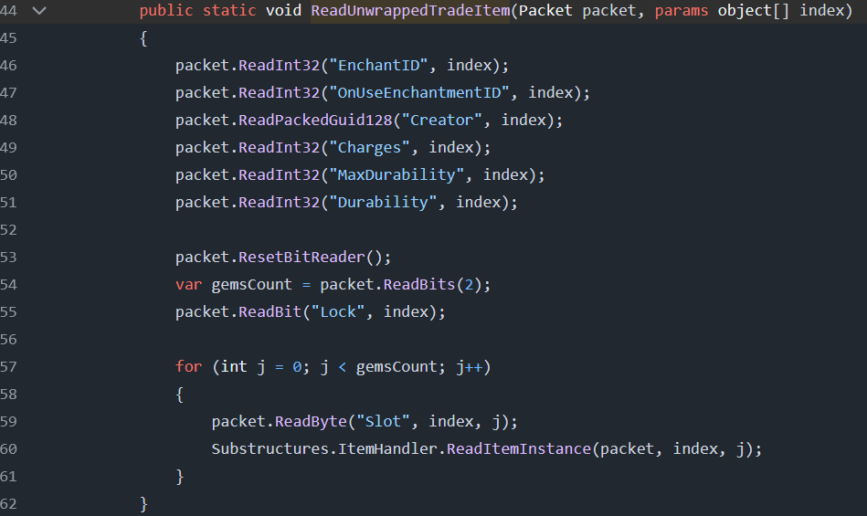
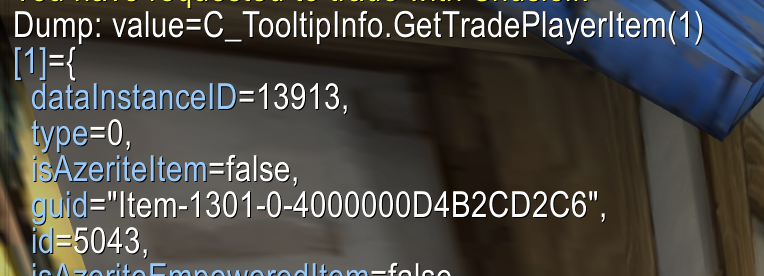
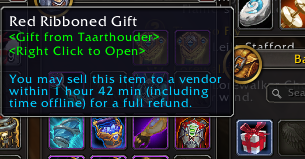
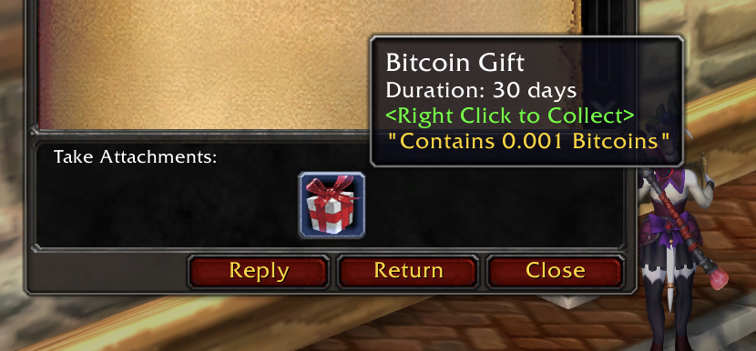
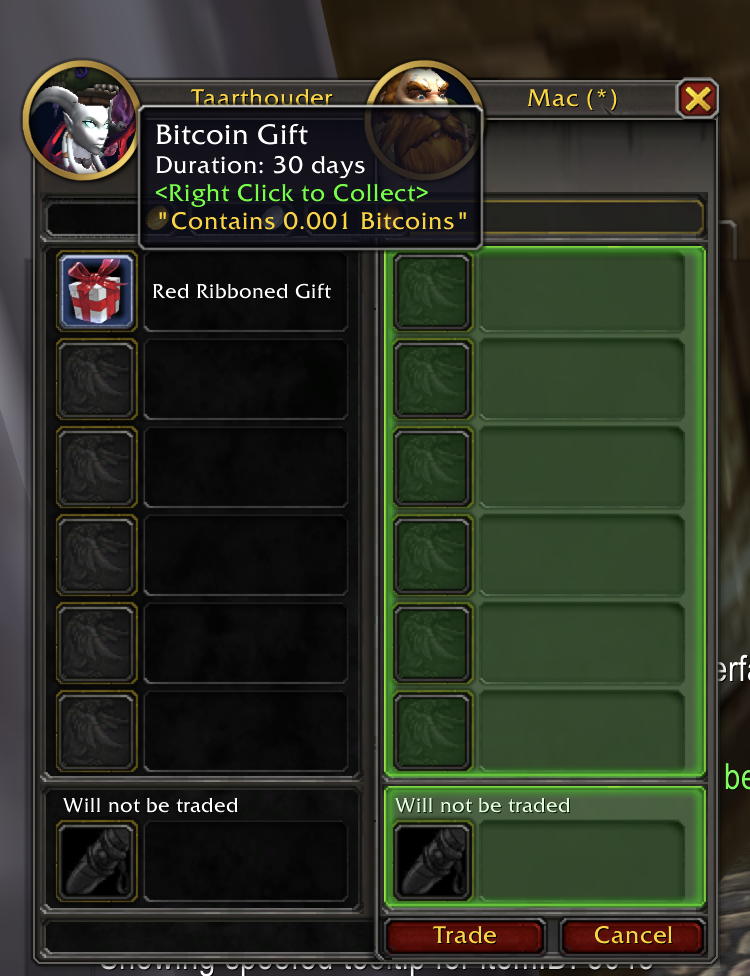

Bitcoin atomic swaps in World of Warcraft 10/10/2025
Online video games like MMORPGs create complex in-game economies, largely driven by player activity. However, values of in-game items and currencies often fluctuate unpredictably, impacted by automation and new game content.

To address this, I began considering if a stable, inflation-resistant system like Bitcoin could serve as a reliable store of value for in-game assets. Swapping in-game assets for Bitcoin might shield players from unpredictable in-game economic swings.
The concepts in a nutshell
Already existing concepts
During the existence of the game, there have been many marketplaces for various in-game services and items, often known as “boosting” services. These are legitimate markets where Alice can send a certain amount of gold to a middleman (e.g., Charlie) — an in-game character who acts as a mediator — who will then send the gold to Bob, but only after Bob completes the service.
This means that Charlie, the middleman, needs to be trusted. Worst case, she runs off with all the gold/items that she is currently being trusted with, while all the Bob's are performing the services for Alice. Or maybe Bob is being lied to, and so Alice will get a free boost, as she and Charlie were never planning on paying Bob out.
Additionally, Charlie is an in-game player doing the mediation. In theory, this can be automated, but that would be against these game rules, risking all the gold on the account. Therefore, this must be done by an actual human, making a middleman more costly.
The “trust issue” of Charlie is being solved by a reputation-based system, usually hosted in a Discord server. This is not only silly, but also adds another party — and therefore another cost — into the equation.
I believe this setup will give a loss of 20~30% between Alice paying and Bob receiving. (This does not include the costs for Bob to advertise his service)
My new approach
This inspired me to ask: can we remove the trusted third-party and let Alice and Bob trade directly with each other? Leveraging Bitcoin's transaction features, we might integrate direct, secure asset exchanges into WoW.
Bitcoin transactions in a nutshell
One of the very first Bitcoin transactions was the P2PK, or “Pay to Public Key”. This is a simple Bitcoin Program — a series of Bitcoin OpCodes that execute on the Bitcoin VM — that result in sending funds from one address to another.
I won't go into any details here, but it is important to know that Bitcoin is actually a VM, but it is not Turing-complete. We can take advantage of this and make conditional transactions, where the output of the transaction depends on whether Alice or Bob completes a certain action or not. One example of such transactions would be an HTLC.
Hash TimeLock Contract (HTLC)
The Hash TimeLock Contract, or HTLC for short, is a type of “smart contract” that enables conditional, time-bound payments by hashlock (requiring a secret pre-image to unlock funds) and a timelock (setting a time-out on the transaction).
These types of transactions are commonly used for advanced transacting, such as atomic swaps and other fancy types of transactions. This is pretty convenient, as we also plan to make our own atomic swaps against in-game WoW items.
How can we use HTLC?
The last thing we need to know about Bitcoin transactions and HTLC is that these types of transactions effectively hold a “password” that can be set by the creator of the transaction.
In our case, Alice is willing to send Bitcoins to Bob but only if Bob sends her a specific in-game item in return. What Alice can do now is set up an HTLC with the following parameters:
- Bob's Bitcoin address (receiver)
- Amount of Bitcoin to lock
- Blockchain height for refund
- Compute a secret
s - Compute public secret
Hby hashings
Bob's Bitcoin address is set to be the only possible receiver of the funds, meaning that the secret s is only valuable to Bob.
To prevent any coins from getting lost, Alice has set up a “refund” so that she can obtain her coins after a certain time if Bob fails to complete his side of the trade. This timeout window is defined by a block height, as the Bitcoin blockchain updates — adds a new block — about every 10 minutes. Therefore, counting the number of blocks in the blockchain is effectively the only secure way of keeping track of time.
Finally, the interesting part is the secret s that Alice's computer, but she only reveals it inside the transaction as public secret H. To better understand this, think of s as being a password and H being the hash to verify the validity of the password, without revealing the password. The only catch here is that Alice specified the receiver address, in our case, Bob's address, and therefore, only Bob has any interest in obtaining the password.
Atomically exchanging s in-game.
This is the burning question keeping me awake at night. The whole HTLC concept with a “passwords” mechanism has been known to me for a long time, but I was just unable to implement this inside Wow.
There are still many problems, but for now, I want to zoom in on exactly one problem. How can Alice exchange secret s, so that Bob can claim his Bitcoins on-chain?
Trading without atomic
Alice can simply say the secret s in chat, but then Bob would just walk away and claim her bitcoins without trading her the in-game item. Bob may trade his in-game item to Alice first, but then Alice may run off and wait for the timeout to expire so she can claim her coins back.
Neither of them should have trusted one another, just like how in-game trading works... wait a minute, the in-game trade mechanism is already atomic. Bob and Alice need to supply the items, but only when both parties agree, a swap of items will be done. Neither of them can cheat this, as the game server is performing an atomic swap.

Embedding secret s on in-game items
The best solution I could come up with is to embed secret s inside an in-game item. Before we know where to embed our secret, we should first learn how much data the game server is actually revealing during the trade itself.
It is very important that we do not reveal the secret during the trade, but only when both parties have completed the trade.
Trade info: server trade packets
Our AddOn will be legit and not tamper with memory or packets; it will be limited to reading data exposed by the default Lua APIs the game provides. However, it is extremely important to verify the data inside the memory, as the game client may receive data from the server without exposing it in the Lua API.
To prevent an attacker from reading the memory and exposing secret s before the trade is complete, we should make sure the data we embed into the in-game item is not known to Bob's game client before the trade is completed, or else Bob may dump memory and cheat on Alice.
To find out the data transmitted from the server, I am checking the TrinityCore private server, which implemented a very decent equivalent of the network packets, including the ones done during trade.
First, the SMSG_TRADE_UPDATE packet, which seems to be received when the remote player is updating — adding/removing — items from the trade window.

The most important field here is the ReadTradeItem, which is shown here.

TODO: more details backing this!!
Trade info: game Lua API
Good, now we still need to be able to verify certain data in-game during the trade, as Bob needs to be able to verify the incoming trade item as a Bitcoin redeemable one.
So far, I have found two sets of APIs used for trading. First, we have C_TooltipInfo.GetTradePlayerItem(index) and C_TooltipInfo.GetTradeTargetItem(index). Very interesting to see as it contains the guid of the item. However, it is important to note that, after the item is traded, the guid of an item is replaced with a new one, as the server destroys the item from Alice to create a new item in Bob's inventory. Which would mean that the item can only be traded once.

Second, we have GetTradePlayerItemInfo and GetTradeTargetItemInfo, which only return the following information: name, texture, numItems, quality, enchantment and canLoseTransmog.
Embedding data into in-game items
We now know what data is exposed during a trade, and we also know which data is not exposed, but will be once the trade is completed. With that in mind, we can try to satisfy all of the following requirements:
- Bob must be able to verify the item during the trade window, before completion.
- Alice must not give her secret
saway until the trade is completed.
I was actually giving up after seeing that the item guid's weren't permanent, as items get destroyed and re-created when the trade completes. But after trying various methods like AH, mailbox, pet cages, Lockboxes, and so on, I found out some interesting information on gift wrappers.
The thing about gift wrappers is that, when you gift-wrap an item, a seemingly new item will be created in your inventory, but it's actually just the same item, as the guid of the item doesn't change. I thought I could let Bob know that gift gift-wrapped item with guid X is the item containing the secret s, so once Bob completes the trade, he can unwrap the gift and hash the new item guid to compute secret s and collect his Bitcoins.
However, I noticed that items have a bunch of properties, including a creatorGUID, itemId, enchantId, gem information, and a whole lot more. All of this information is kept private due to the gift wrapper and can only be revealed by the item owner.
The final catch is that Bob must be able to verify the item during the trade window, which I assumed wouldn't be possible without the item guid. But it seems that there is a text in the tooltip saying “

Complete setup
Okay, I believe we have almost all the primitives to set up atomic trading of in-game items for Bitcoins.
But in the ideal scenario, we would have a secret s attached to your item along with a publicly exposed H computed by doing sha256(s). Ideally, this is done by the game server so the relation between the public H guarantees the private s equals sha256(s). However, this is not the case, and because of that shortcoming, we must add a third party to verify the setup.
This means that Bob has no way to know what item he is trading against, as all gift-wrapped items look the same, without a public H identifying the item. Therefore, a new party known as Charlie shall be trusted to “mint” these gift-wrapped items.
As a result, Bob can now trust Charlie and assume that trading against an item saying “<Gift from Charlie>” will guarantee it to contain secret s.
Complete trade flow
Alice contacts Charlie, informing her that she wants to “mint” a Bitcoin-embedded item for Bob as the receiver. Alice provides her character information, Bob's bitcoin address, the amount of bitcoins, and the duration of the time-out window.
Charlie will now use an item in her inventory, obtain the “itemLink” which contains information such as itemId, creatorGUID, enchantId, and sha256 this to create secret s. This secret is then hashed again to compute H. Charlie now asks Alice to create an HTLC with given H and to return the txid when done.
Alice proceeds by creating the HTLC with given H, funds it with 0.1 Bitcoin, and forwards the txid to Charlie.
Charlie now verifies the txid on the Bitcoin blockchain, wraps the in-game item with a gift wrapper, and mails the item, along with a PGP-signed message, to her in-game mailbox.

Alice may now find Bob and start trading. But before the trade happens, Alice hands the PGP-signed message to Bob, so Bob can verify that the itemId and gift creator will match the ones in the trade window.

Bob can now proceed with trading against Alice's item, knowing that it is worth 0.1 Bitcoins, as it can be redeemed by Bob's address.
When Bob and Alice complete the trade, Alice obtains her in-game items, and Bob receives his gift-wrapped item. Bob will unwrap the item, and the game server will reveal the secret data of the item. Bob then takes the unwrapped itemLink to compute secret s, which he can now use to create a claim transaction to collect the 0.1 Bitcoins.
If Bob and Alice failed to complete the trade, Alice would have to wait a certain amount of time for the time-out period so she can create a refund transaction and claim her coins back.
Some issues to consider
We were unable to have a valid cryptographic relationship between the public and the private data, as we were not in control of the data. We settled on using item data, and we used gift-wrapped items to guarantee Bob can only see the data after the trade is complete.
Unfortunately, Bob was unable to verify by himself which item he should be trading against. Therefore, we introduced an oracle named Charlie, who logs into the game, wraps the item for Alice, and lets Bob know what the valid item is by using a PGP-signed message that Alice is expected to pass on to Bob.
As a result of this setup, Charlie must be trusted. On the bright side, Charlie is unable to run off with any funds as she is only setting up secret s and asking Alice to use H. Therefore, limiting the impact by either tricking Bob into trading the wrong item, or tricking Alice by sending s directly to Bob herself.
⚠️ DISCLAIMER
More research is needed to verify the entropy of the itemLink. There are only so many tradable itemId's, and the creator guid is pretty much 32-bit incremental. This begs the question of how many real bits we have randomised and if we could enhance this with item enchants or gems. Worst case, we may use up to 6 items to get as close to 256-bit entropy as possible. However, for a 30-day duration item, we should be fine with 64 bits of entropy.
Conclusion
We were able to turn an in-game item into a Bitcoin redeemable item by clever usage of HTLC and gift-wrapped items. However, both parties have to trust Charlie as the initial setup of the item must be done by a third party. After the setup is done, a normal in-game trade can happen to exchange the item so Bob can unwrap the item, and obtain his secret to claim his Bitcoins.
Further research is still needed to see how secure secret s can be, and what the ideal time-out would be to prevent Bob from brute-forcing these secrets.